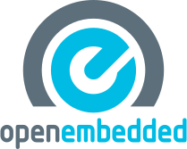
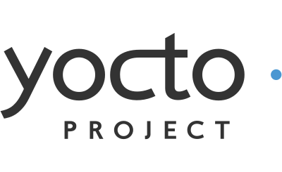

4.4. Yocto Project Provides¶
embedded tools
best practices
reference implementation
Yocto Project and OpenEmbedded
OpenEmbedded
{kind=link}
Created by merging the work of the OpenZaurus project with contributions from other projects such as Familiar Linux and OpenSIMpad into a common code base
Community project focusing on broad hardware and architectures
Large library of recipes to cross-compile over 1000 packages
Switched from flat meta-data architecture (OpenEmbedded Classic) to layered architecture based on OpenEmbedded Core layer, which is in common with the Yocto Project and the Ångström Distribution
Yocto Project
{kind=link}
Family of projects for developing Linux-based devices
Self-contained build environment providing tools and blueprints for building Linux OS stacks
Supported by silicon vendors, OSVs (also providing commercial support), open source projects for hardware and software, electronics companies
Standardized components with compliance program
Focused on tooling and maintenance, major release every 6 months
Why not just use OpenEmbedded?
OpenEmbedded
OpenEmbedded is an Open Source Project providing a Build Framework for Embedded Linux Systems
Not a reference distribution
Designed to be the foundation for others
Cutting-edge technologies and software packages
Yocto Project
The Yocto Project is focused on enabling Commercial Product Development
Provides a reference distribution policy and root file system blueprints
Co-maintains OpenEmbedded components and improves their quality
Provides additional tooling such as Autobuilder, QA Tests
Provides tools for application development such as ADT and Eclipse Plugin